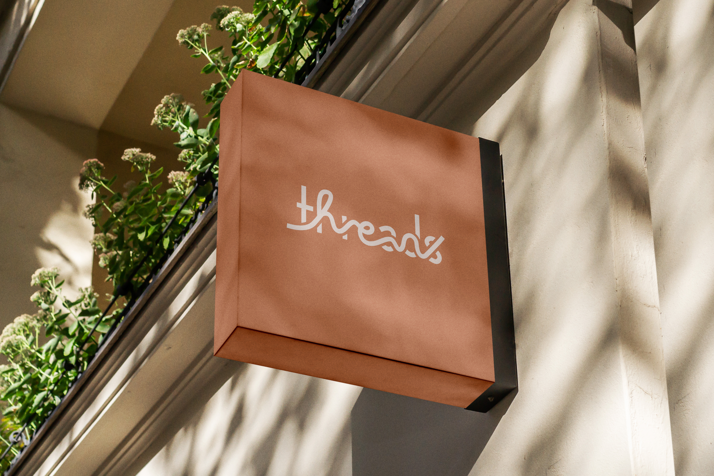
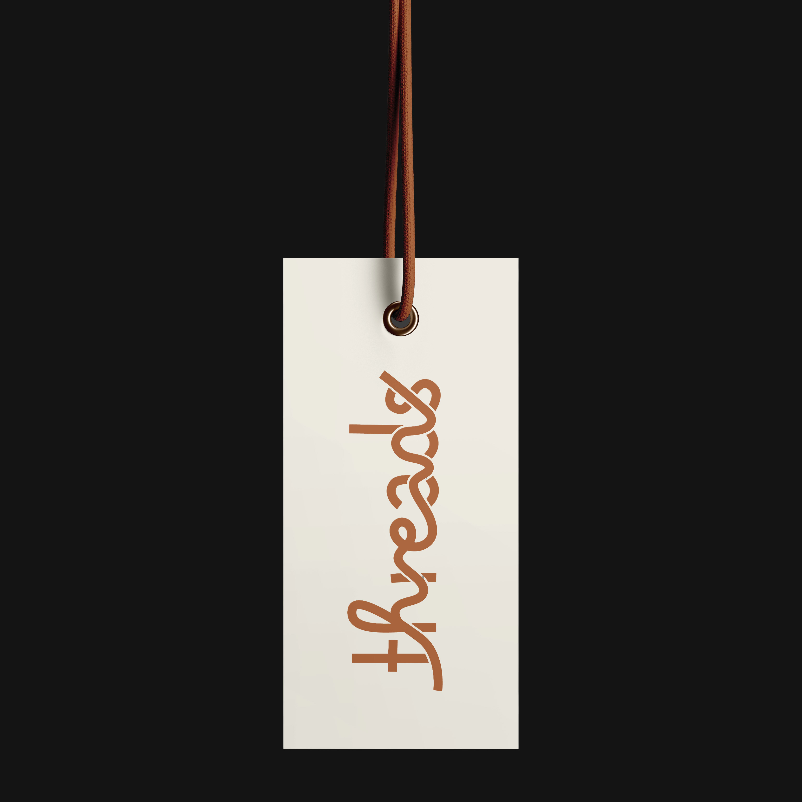

Case Study · Design · 2025
Static + Animated Logotype
Threads is a contemporary clothing retail brand targeting young, fashion conscious shoppers and local trendsetters. Rather than treating the name as purely metaphorical, the concept centers on the physical behavior of thread itself, how it loops, pulls, overlaps, and binds garments together.



Concept
The goal was to create a logotype that feels bold and urban while staying grounded in the material logic of clothing construction.
Design Approach
The process began with typographic research and type tasting to establish the structural tone of the brand. After selecting a typeface with modern presence and confidence, the focus shifted from font choice to material study.
By analyzing thread behavior, movement, tension, and stitch patterns, the concept evolved into constructing the word "Threads" through a continuous line integrated into the letterforms. The structured type provides clarity and legibility, while the organic thread introduces motion and softness.
In the animated version, the thread emerges from a shopping bag, forms the word across the screen, and retracts back into the bag. This motion reinforces circulation, garments move in, move out, and remain in constant exchange.
Result
The final identity balances structure and fluidity. The logotype reads clearly at scale, functions effectively in both static and motion formats, and translates cleanly across storefront signage and digital platforms.
By allowing thread behavior to drive both form and animation, the system stays cohesive and directly connected to the brand concept. The result is a visual identity that feels contemporary, material aware, and built for circulation.